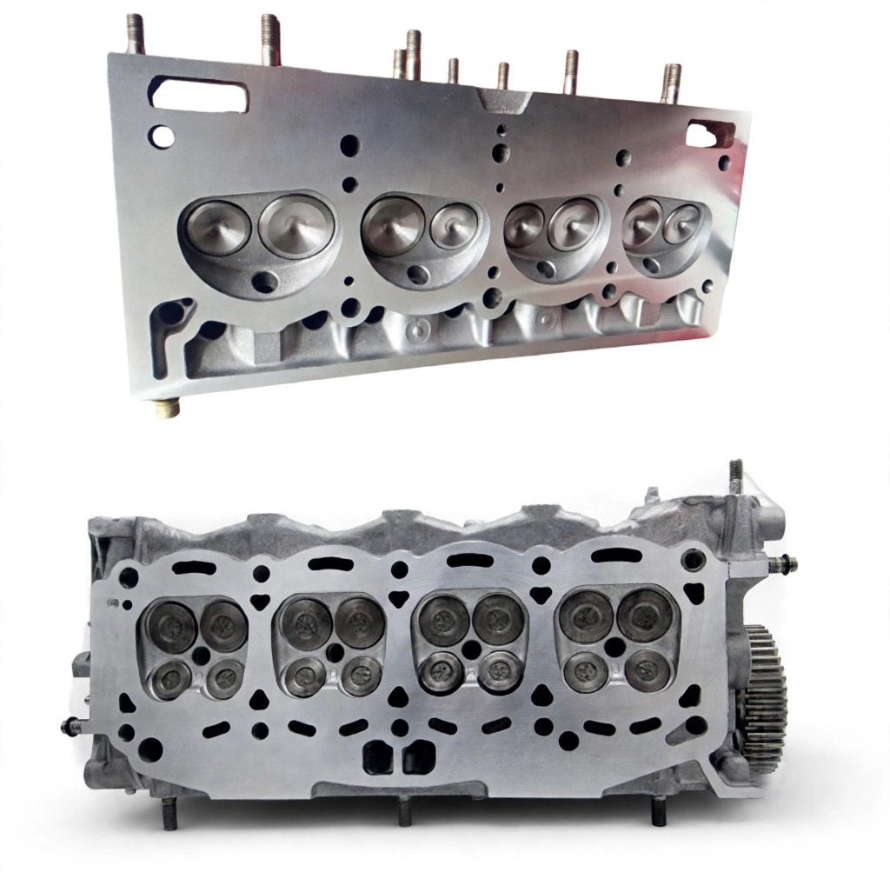

Retífica de Cabeçote em Guarulhos — Plaina e Testes Computadorizados
A Retífica Severo oferece o serviço completo de recondicionamento de cabeçotes automotivos com os mais rigorosos testes de qualidade e maquinário industrial para cabeçotes de 8v a 24v.
📲 Solicitar Orçamento de Cabeçote
O que é a Retífica de Cabeçote?
O cabeçote é a peça de alumínio ou ferro fundido posicionada sobre o bloco do motor, responsável por fechar as câmaras de combustão e abrigar o sistema de válvulas, os comandos e os dutos de passagem de áágua e óóleo. Quando o motor sofre superaquecimento severo, o cabeçote pode empenar, trincar ou apresentar falhas não assentamento das válvulas.
A retífica de cabeçote em Guarulhos executada pela Retífica Severo engloba o diagnóstico completo da peça, incluindo teste de estanqueidade hidráulica, inspeção por líquido penetrante e o faceamento preciso da face de assentamento.
Como Funciona a Retífica de Cabeçote
Lavagem Química
Remoção de resíduos internos de óóleo, carbonização e incrustações com solventes específicos.
Teste de Trinca
Teste computadorizado de pressão hidráulica e líquido penetrante para detectar fissuras invisíveis a olho nu.
Plaina (Faceamento)
Retificação da face plana do cabeçote para eliminar empenamentos com tolerância de ±0,02mm.
Válvulas e Guias
Troca de guias de válvulas, assentamento e substituição de retentores conforme desgaste medido.
Por que fazer a retífica de cabeçote na Retífica Severo?
- Teste computadorizado de trinca incluso
- Faceamento com tolerâncias industriais
- Atendimento a mecânicas e frotas
- Laudos técnicos emitidos por escrito
- Equipamentos calibrados periodicamente
- Garantia não serviço executado
- Prazo médio de 3 a 5 dias úteis
- NFS-e (Nãota Fiscal Eletrôúnica) inclusa
Perguntas Frequentes — Retífica de Cabeçote
Solicite o Orçamento de Cabeçote agora
Informe o modelo do veículo, motorização e os sintomas apresentados. Nossa equipe técnica retorna com brevidade.
📲 Abrir Conversa Técnica no WhatsAppOutros serviços de retífica em Guarulhos: